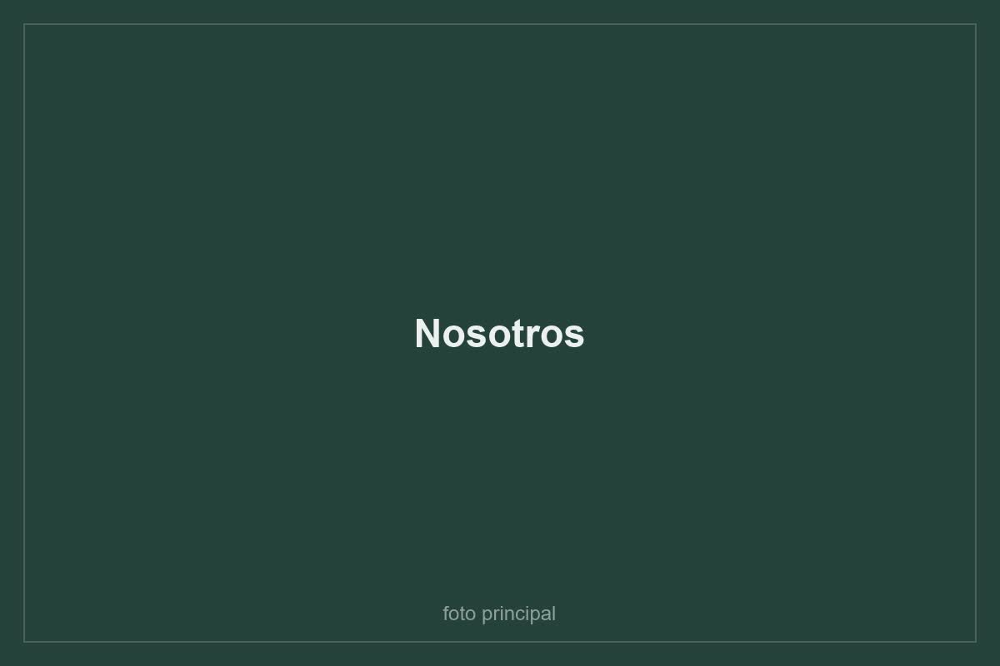

Cultivo propio
La mayoria de las plantas del catalogo sale de nuestro invernadero, no de un intermediario. Sabemos que edad tienen y en que sustrato crecieron.
Botanik nacio de una molestia concreta: comprar una planta y verla morir a las tres semanas sin saber por que.
Partimos en 2024 con un invernadero en Buin y un catalogo de doce especies. La regla desde el primer dia fue no vender nada que no supieramos mantener vivo nosotros mismos, y escribir en cada ficha cuanta luz necesita la planta y cada cuanto se riega.
Hoy el catalogo tiene mas de cuarenta productos entre plantas de interior y exterior, maceteros, sustratos, fertilizantes y herramientas. Seguimos cultivando la mayor parte de las plantas que vendemos, y las que no, las compramos a viveros de la zona central que trabajan igual que nosotros.
Despachamos a todo Chile en cajas disenadas para que la planta viaje de pie y llegue sin hojas quebradas.

Un recorrido de tres minutos por donde se cultivan las plantas que llegan a tu casa.
La mayoria de las plantas del catalogo sale de nuestro invernadero, no de un intermediario. Sabemos que edad tienen y en que sustrato crecieron.
Cada producto declara luz, riego y si es apto para mascotas. Si una planta es dificil, lo decimos en la descripcion en vez de esconderlo.
Si tu planta llega danada o no se adapta durante el primer mes, la reponemos. Escribenos desde la pagina de contacto.
Este sitio es el proyecto de la asignatura Desarrollo Fullstack II (DSY1104) de Duoc UC.
Modulo de administracion
Mantenedores de productos y usuarios, validaciones de esos formularios y control de acceso por perfil.
Tienda publica
Catalogo, detalle de producto, carrito de compras, paginas de contenido y validaciones de la tienda.